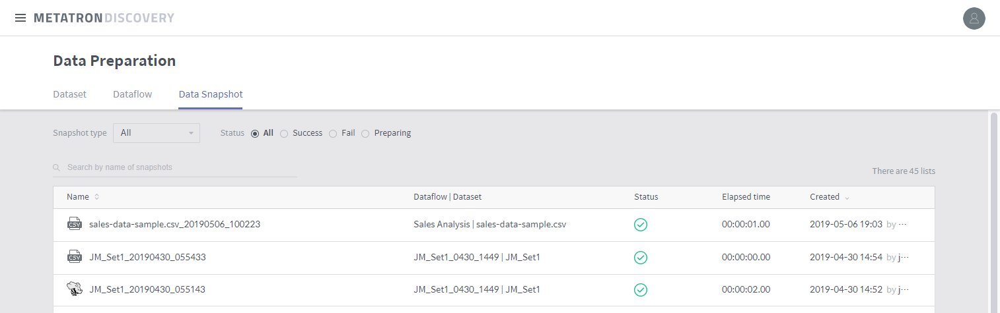
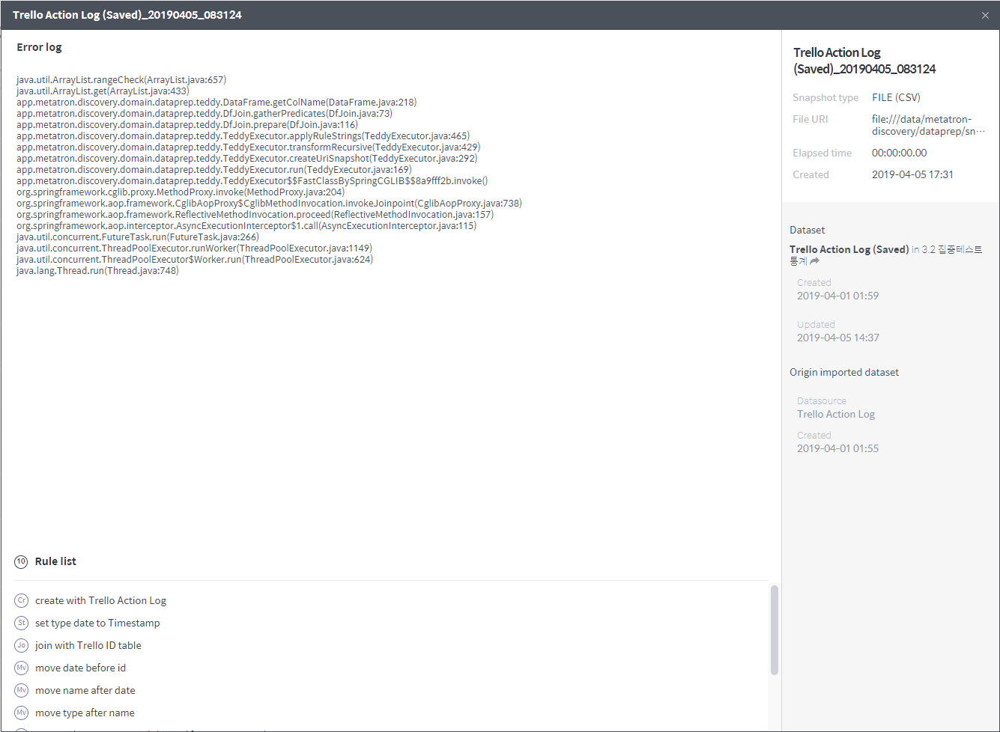

Use data snapshot results¶
A data snapshot created through a dataflow can be used as follows:
Check the data snapshot results¶
The status of snapshot creation can be classified as follows:
Success = SUCCEEDED
Failed = FAILED
Preparing = INITIALIZING, RUNNING, WRITING, TABLE_CREATING, CANCELING
You can view the details of snapshot creation through the two paths below:
Go to the snapshot list under MANGEMENT > Data Preparation > Data Snapshot.
Click the Snapshot (#) tab on the right of the Edit rules page in Dataflow

In the snapshot details page, you can view details such as data validity ratio and a grid of the created snapshot, and download the results as a CSV file (Download as CSV).

If valid data has not been created, the snapshot details page displays an error log.

Ingest into the Metatron engine¶
(upcoming feature)
Download as a CSV file¶
In the details page of a successfully created snapshot, the Download as CSV option is enabled.

The downloaded file is a standard CSV, with each value separated by a “comma” and each row by a “new line.”